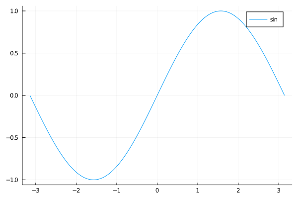
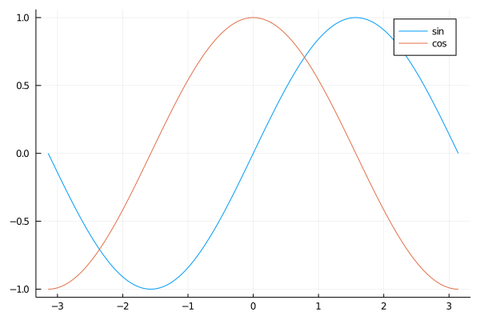

Plots.jl

Basics
The basic function for creating plots plotting is the plot function.
using Plots
x = range(-π, stop = π, length = 1000);
plot(x, sin.(x); label = "sin")
plot!(x, cos.(x); label = "cos")
plot(x, [sin.(x), cos.(x)]; label = ["sin" "cos"])Plot attributes
Create a plot of $\sin$ and $\cos$ function for $x \in [0, 2 \pi]$ with following properties:
- Function $\sin$ is plotted as a
red dashedline of width2with labelsin. - Function $\sin$ is plotted as a
blue dottedline of width4with labelcos. - The title / x label /y label are
Trigonometric functions/x/yrespectively. - The tick labels on the x-axis are
["0", "0.5π", "π", "1.5π", "2π"].
Solution:
x = 0:0.01π:2π
plot(x, [sin, cos];
label = ["sin" "cos"],
color = [:red :blue],
linestyle = [:dash :dot],
linewidth = [2 4],
title = "Trigonometric functions",
xlabel = "x",
ylabel = "y",
xticks = (0:0.5π:2π, ["0", "0.5π", "π", "1.5π", "2π"]),
)
Create a plot given by the following two functions:
\[\begin{aligned} f_x(t) & = (a + b)\cos(t) - b \cdot \cos \left( \left(\frac{a}{b} + 1 \right)t \right) \\ f_y(t) & = (a + b)\sin(t) - b \cdot \sin \left( \left(\frac{a}{b} + 1 \right)t \right) \\ \end{aligned}\]
where $a = 4.23$, $b = 2.35$ and $t \in [-15, 20]$. Try to set the attributes of the plot to get a beautiful picture.
Solution:
a = 4.23
b = 2.35
fx(t) = (a + b)*cos(t) - b*cos((a/b + 1)*t)
fy(t) = (a + b)*sin(t) - b*sin((a/b + 1)*t)
plot(fx, fy, -15, 20, 1000;
legend = false,
axis = false,
ticks = false,
linewidth = 2,
)or equivalently
t = range(-15; stop = 20, length = 1000)
plot(fx.(t), fy.(t);
legend = false,
axis = false,
ticks = false,
linewidth = 2,
)Plots package provides a simple way of defining special plots for custom data types using so-called recipes (in fact, recipes are defined in a stand-alone package RecipeBase). By defining custom recipes it is possible to change the preprocessing of the data before they are plotted. There are many packages that provide specialized plot recipes. For example, StatsPlots provides recipes for plotting histograms, boxplots, violin plots, etc. This package also provides recipes to treat DataFrames and Distributions, which allows simple plotting of tabular data and distributions.